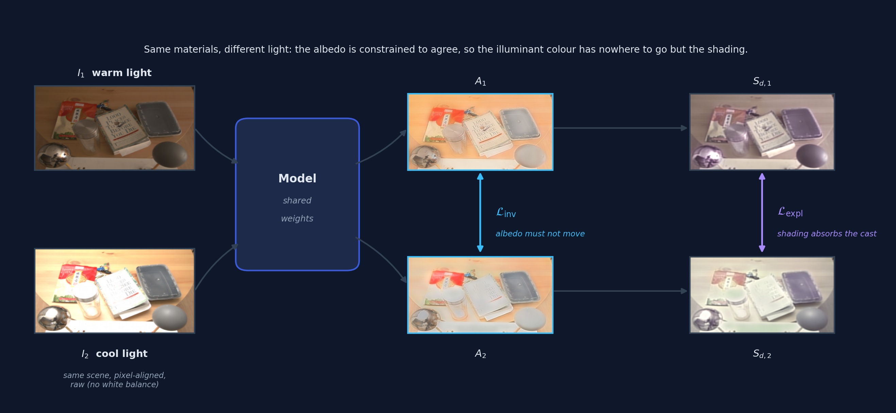
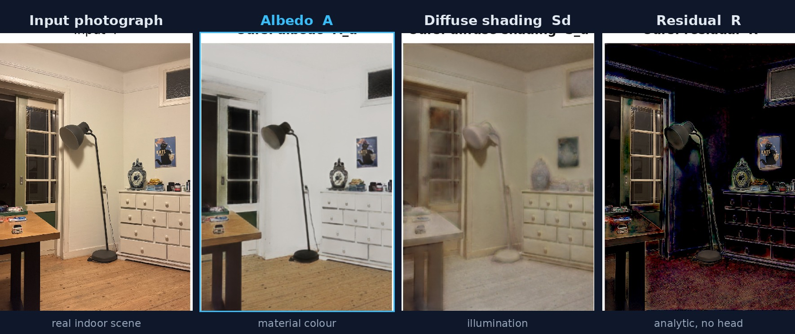

Coloured Illumination Constancy in Intrinsic Image Decomposition via Cross-Render Albedo Invariance
Abstract
Intrinsic image decomposition (IID) separates a photograph into an albedo layer — the surface material colour independent of lighting — and a shading layer that encodes the illumination effects. Existing learning-based methods assume achromatic or white-balanced illumination and apply grayscale shading models that cannot absorb the hue of a coloured light source. When a scene is lit by warm incandescent lamps or spectrally skewed LEDs, the residual illuminant colour bleeds into the recovered albedo, making the same physical surface appear to have different material colours under different lighting.
We introduce CARI (Cross-render Albedo invariance), a physics-grounded training strategy: if two calibrated images depict the same surface material under different illuminants, their estimated albedo maps must be identical. By sampling such pairs from raw, unwhite-balanced captures and enforcing this invariance during training, we teach a DINOv2-L/14 + DPT network to separate illuminant hue from material colour — at zero additional inference cost.
CARI also identifies a systematic flaw in the prevailing chroma-cast evaluation metric — that desaturating the albedo artificially deflates the score — and decomposes it into two complementary measures: Castrel (illuminant invariance) and Chromafid (colour fidelity). With only 18.5 M trainable parameters — approximately 70× fewer than diffusion-based baselines — and roughly 5× faster inference, CARI is the only model in our comparison that is simultaneously the most stable in lightness and the best calibrated in colour on MIDIntrinsics, and we report where it trails as well.
Problem
Real-world scenes are rarely lit by a single white light source. Interiors combine warm lamps, cool skylights, and coloured LEDs. When a photograph is captured without white-balancing, these coloured illuminants tint the scene. A grayscale shading model cannot "explain" the hue component of this tint — so the colour residual is incorrectly absorbed by the albedo layer.
This makes IID-derived albedo maps unreliable for downstream applications such as real estate photography relighting, AR material editing, and appearance normalisation for visual search — the core use-case motivating this thesis in collaboration with 3DUniversum.
Method
CARI introduces a training-time constraint that enforces cross-render albedo invariance — the idea that the same surface material must produce the same albedo estimate regardless of the illuminant it is imaged under. The constraint is derived directly from the physics of image formation and requires no ground-truth albedo labels.

The cross-render constraint. The same scene is captured under warm and cool light and passed through shared weights. An invariance loss forces the two albedo estimates to match (A₁ = A₂), while an explanation loss lets the shading layers absorb the colour cast.

What the model outputs. One forward pass gives the albedo and the coloured diffuse shading; the residual is then computed analytically, so specular highlights and clipped light sources are accounted for without a third head.

Model architecture. A frozen DINOv2-L/14 encoder feeds a DPT decoder that branches into an albedo head and a shading head. The albedo head additionally receives the gamma-encoded input as a full-resolution RGB skip, which is what restores material colour — and what the invariance loss has to keep honest. The residual R = (I − A⊙Sd)+ is analytic, so there is no third head and the trained decoder stays at 18.5 M parameters.
New Evaluation Framework
The existing chroma-cast metric for IID evaluation has a critical flaw: a model can achieve a near-zero chroma-cast score simply by desaturating its albedo output — sacrificing colour fidelity to game the metric. We identify and document this loophole through controlled experiments.
• Castrel — measures illuminant invariance: does the same surface produce the same albedo under different lights?
• Chromafid — measures colour fidelity: does the albedo preserve the true material colour?
A good model must score well on both. This framework exposes desaturation-gaming in prior work.
Results
The headline result is a conjunction, not a clean sweep, and it is more interesting that way. On the held-out MIDIntrinsics test split our model is the most stable in lightness and the best calibrated in colour, but it is not the most hue-stable method in the comparison. That gap is the point: the two methods that beat us on stability do it partly by discarding colour.

Why a low chroma-cast score can be misleading. Next to the pseudo-ground-truth albedo, the two predictions with the lowest pooled chroma cast — our own colour-path-off ablation and CRefNet — are visibly drained of colour. A prediction cannot drift in a dimension it has thrown away. This is the observation that motivated splitting the metric in two.
| Model | Cmat ↓ | Chromaerr ↓ | Castrel ↓ | Chromafid (→1) |
|---|---|---|---|---|
| Ours (full model) | 0.130 | 0.121 | 0.421 | 0.941 |
| Marigold-App | 0.193 | 0.195 | 0.355 | 0.728 |
| Marigold-Light | 0.546 | 0.154 | 0.392 | 1.148 |
| CRefNet | 0.151 | 0.201 | 0.355 | 0.484 |
| Ordinal Shading | 0.252 | 0.148 | 0.549 | 0.924 |
MIDIntrinsics, 30-scene held-out test split. Cmat is lightness stability across illuminants and Castrel is hue stability (both lower is better). Chromaerr is distance from the pseudo-ground-truth material colour. Chromafid is the share of reference colour spread a model retains: below 1 is greyed-out, above 1 is over-saturated. CRefNet keeps under half.

The trade-off, plotted. Lower is better on both axes. CRefNet and Marigold-App drift less than we do, but sit far higher in calibration error. There is no single winner here, which is exactly why we report both axes instead of one combined number.
The honest summary: our model is the only one in this comparison that is simultaneously best on lightness stability and best on colour calibration, while staying within a fifth of the most hue-stable method — and it does that with a frozen encoder and a decoder small enough to train on one GPU. Benchmarks on ARAP, MAW and IIW are reported in the thesis.
BibTeX
Acknowledgements
This thesis was conducted at the University of Amsterdam under the Erasmus Mundus Joint Master's programme in Computational Colour and Spectral Imaging (COSI). I am grateful to Prof. Dr. Theo Gevers and Dr. Sezer Karaoglu for their supervision and to 3DUniversum for providing real-estate image data and domain context. The COSI consortium scholarship made this research possible.